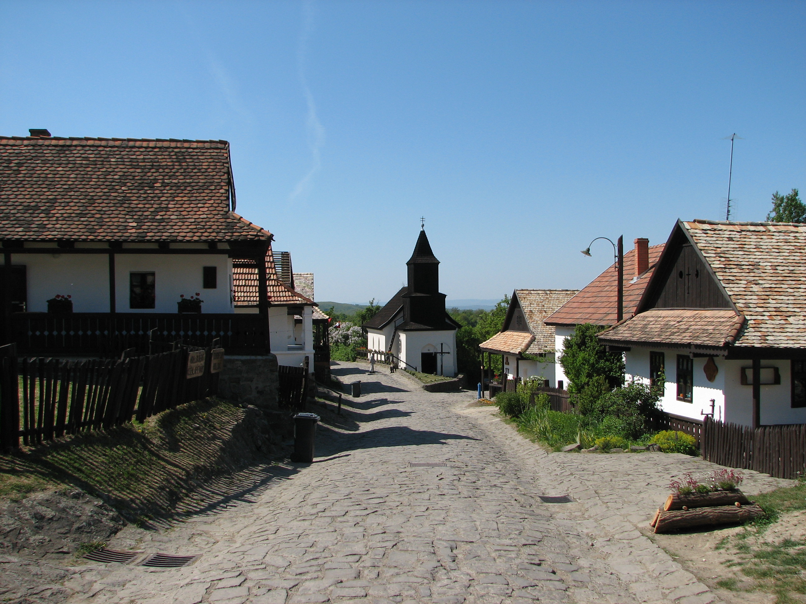

A Budapesttől körülbelül 100 kilométerre, a Cserhát hegységben fekvő Hollókő máig őrzi középkori jellegét. Az egyutcás falu 126 házán és mezőgazdasági épületén látható milyen volt egy hagyományos közép-európai falu a 20. századi agrárforradalom előtt. A családok első generációi az út két oldalán telepedtek le, a következő generációk a parcellák hátsó végében építették fel házaikat. A lakóházak stílusában és építési módjában felismerhetőek a palóc hagyományok, utcafrontjuk oromzatos, utcai és udvari oldalukon tornáccal. A lakosok nem tartották be a fával való építkezés 1783-as tilalmát, ezért többször is tűzvész pusztított a településen. Ezek utána házakat hagyományos módszerekkel építették újjá. A falu közepén áll a fazsindellyel fedett katolikus templom. A település tövében épült 13. századi vár a 18. században elpusztult, azóta romos állapotban van. A falu házainak többsége ma is lakott, az egyikben alakították ki a falumúzeumot.
